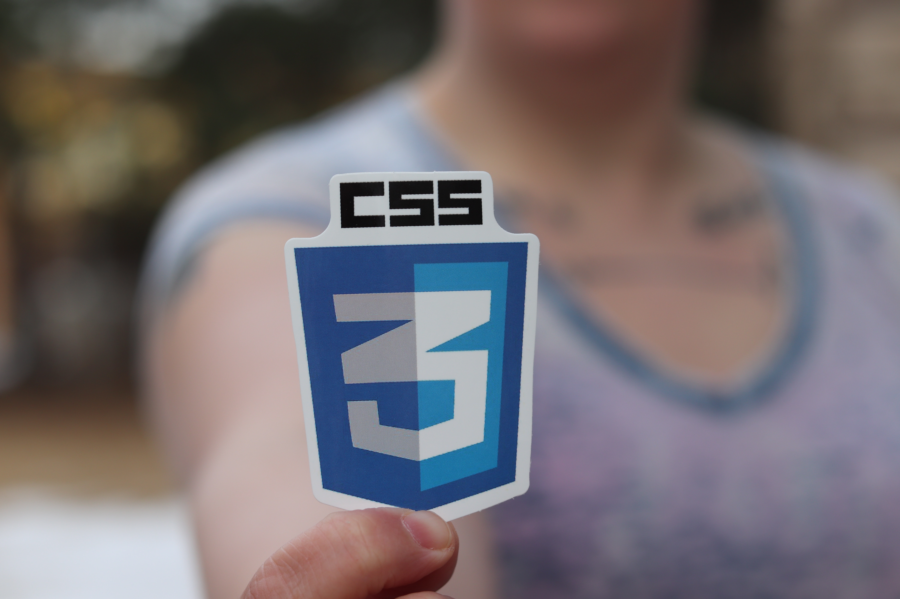

MY STYLE IS THE SHEET

Written by: Telian Diggs
Web Developer
Sui Generis Design Inc.
Telian is a Web Designer in the making.
In the realm of web development, where creativity and visual appeal reign supreme, CSS (Cascading Style Sheets) is the magical brush that paints the canvas of the web. Welcome to the captivating world of CSS! In this blog post, we embark on an enthralling adventure of learning CSS for the first time. Brace yourself for a symphony of colors, layouts, and design elements that will transform your web creations into visual masterpieces.
Chapter 1: The Art of Web Aesthetics
As you delve into the world of CSS, you realize that it holds the key to unlocking the true potential of your web pages. CSS enables you to add visual enchantment, breathing life into the structural foundation laid by HTML. You'll discover the power of selectors, properties, and values – the elements that allow you to define colors, fonts, backgrounds, spacing, and so much more. With CSS, you'll embark on a journey to become a true web artist.
Chapter 2: The Symphony of Styles
CSS empowers you to orchestrate a symphony of styles, harmonizing various design elements to create visually stunning web pages. From defining typography with font families, sizes, and styles to crafting immersive backgrounds that set the mood, CSS is your conductor's baton. You'll learn about box models, margins, padding, and borders that sculpt the layout and structure of your web content. Each style rule you master brings you one step closer to creating a visually captivating experience.
Chapter 3: Animating the Web
As you begin to master CSS, you uncover the secret ingredient that breathes life into your web pages: animations and transitions. CSS animations allow you to mesmerize your audience with smooth and captivating movement, while transitions enable seamless transformations between different states. Whether it's a subtle fade-in effect, a mesmerizing slideshow, or an eye-catching hover animation, CSS animations open the door to endless creative possibilities.
Chapter 4: The Responsive Revolution
In today's mobile-driven world, crafting web experiences that adapt seamlessly to different devices is crucial. CSS equips you with the power of responsive design, ensuring that your web pages look and function flawlessly on screens of all sizes. You'll explore media queries, flexible grids, and fluid layouts, enabling your creations to shine on smartphones, tablets, and desktops alike. With responsive CSS, you bridge the gap between your vision and the user's experience.
Conclusion
Learning CSS for the first time is an exhilarating journey that unveils the world of web aesthetics and design possibilities. As you master the art of CSS, you become a web artist, weaving together colors, typography, layouts, and animations into captivating visual experiences. CSS empowers you to transform plain web pages into works of art that leave your audience breathless. So, embrace the journey, let your creativity soar, and let the world witness the symphony of visual brilliance you create through the art of CSS!
“There are three responses to a piece of design – yes, no, and WOW! Wow is the one to aim for”
― Milton Glaser